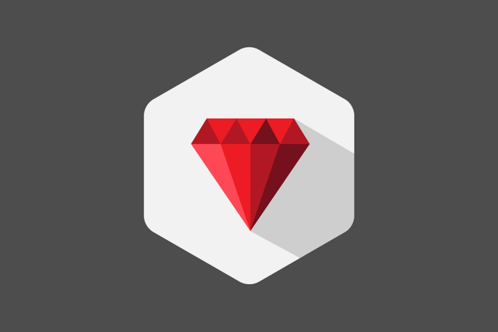

Adan Fernandez
Full-stack developer
adaferbon03@gmail.com
 GitHib
GitHib LinkedIn
LinkedInSkills

Some of my own projects.


Group our transactions
Ruby, Ruby on Rails, PostgreSQL, Rspect, HTML, CSS
In this app, you can create an account or log-in once into the app, you can create different groups and add items to those groups. The overall goal of the app is to have a list of items ordered in groups, in case you need it in the future like a to-buy list.